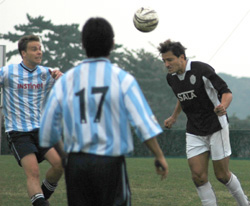
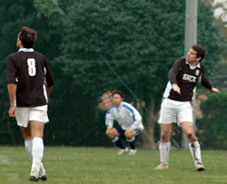

|
YC&AC Sun 6th November. And they say lightning never strikes twice…Doug Lee’s second goal for Sala was also his second from inside his own half.
Following on from last seasons memorable 50 yard header, comes this seasons 60 yard shot, with Lenny claiming the assist (and who can blame him)
|  |
|
Guido with another clearing header.
|
Sala clawed their way to a first victory of the season on a gray, murky day in Yokohama. Indeed, YCAC has been a happy hunting ground for Sala in the past. As Mr Taw kindly pointed out in his match report, Sala are the only team in the TML that have not lost there, 3 wins and a (ridiculous) draw being the order of play.
The start to this season, has seen the two teams in contrasting form however. Sala were yet to record a victory on Sunday morning, whilst YCAC were sitting pretty on maximum points and not a goal conceded. This gulf in confidence wasn’t obvious on the pitch though.
The first half was fiercely fought, with the majority of pressure coming from YCAC. They held the ball for long periods, and must have crossed 20 or 30 balls into the box during the first forty minutes. What they lacked though was a target man to compete with Sala’s giant back line. Clarkey, missing for the last two games, was his usual steady self, despite being nutmegged a few times. Steve, playing on the left has also missed the most of the early games and was welcomed back. Doug Lee playing at right back admitted to touching the ball with his foot, only twice before halftime, one of these however was a long clearance under pressure from a forward, that sailed high and long before dipping just over the bar and nestling on the roof of the net. A master hunter always sets the range and sights of his gun on an antelope before going out to cut a Lion’s spoor.
|
|
Ricky the ref making sure everyone plays it by the rules.
|
YCAC had most of the chances before halftime, but were never able to get anything clear cut, Sala had to scramble the ball off the line a few times to get respite, whilst the attacking trio of Charles, Giles and Dhugal didn’t do a great job of holding the ball up to allow sustained attacking play.
The second half started with Brian, Jeff and Evan, replacing Brookey, Steve and Charles, this injection of fresh legs seemed to inspire Sala, who took the game to YCAC in the opening ten minutes. A clever reverse pass by Shigeru sent Dhugal through on goal, but for once his touch deserted him and his shot was just wide of the right hand post. YCAC came back strongly again, forcing corner after corner, that somehow were cleared time and time again. Clarkey foiled a two man attack single handedly that would surely have led to a goal, and then Sid leapt to push a free kick round the post as it bent towards the top corner, in a ‘camera save’ style.
|  |
|
Doug follows the flight of his punt from back in his own half, as it sails toward the YCAC goal.
|
The turning point came with about 15 minutes to go. Lenny beat two men in the center of the park and squared the ball to Doug Lee who, rather than do anything silly, decided to send the ball as far away from the Sala goal as he could. From over sixty yards, the ball traced a parabolic arc over the YCAC keeper and into the net. Rough justice on a man who had had a fine game. Sala went mental and big Doug can sit back and relax for the rest of the season knowing that he’s got goal of the season wrapped up for the second season in a row. This act was akin to throwing stones at a wasps nest however as YCAC poured on the pressure for the last ten minutes.
As they turned the screw though they left gaps at the back, and Sala probably came closer to finishing the game than they did to tieing it up. Steve had a crushing drive blocked by an unfortunate defender, Dhugal rounded the keeper and cut back to Giles, only for the ball to somehow be blocked on the line, and Giles also had a header right in front of goal that he was unable to apply any power to.
Mr. Taw also rightly pointed out that Sala were surprisingly buoyant in there celebrations. I can assure him that this had nothing to do with the opposition, but merely that a win, against anyone, had been a long, long time coming.
Thanks for listening, enjoy the show.
Report by Roddy Charles.
|